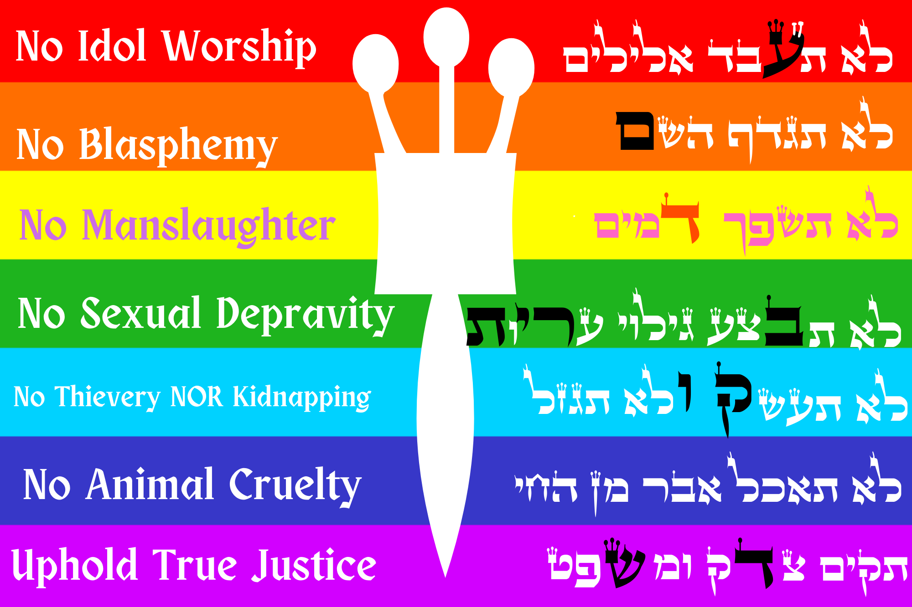
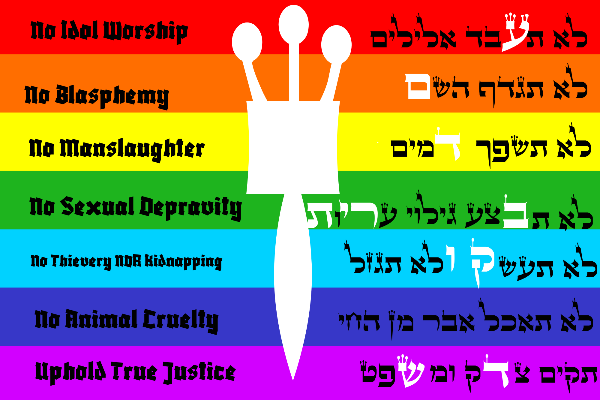

Flag Proposals



The Pride of Jacob Flag™ is an abstract conceptual manifestation of the authentic significance of the rainbow, homiletically derived and inspired by Genesis Chapter 9.
1 And God blessed Noah and his sons, and said unto them: 'Be fruitful and multiply, and replenish the earth. 2 And the fear of you and the dread of you shall be upon every beast of the earth, and upon every fowl of the air, and upon all wherewith the ground teemeth, and upon all the fishes of the sea: into your hand are they delivered. 3 Every moving thing that liveth shall be for food for you; as the green herb have I given you all. 4 Only flesh with the life thereof, which is the blood thereof, shall ye not eat. 5 And surely your blood of your lives will I require; at the hand of every beast will I require it; and at the hand of man, even at the hand of every man's brother, will I require the life of man. 6 Whoso sheddeth man's blood, by man shall his blood be shed; for in the image of God made He man. 7 And you, be ye fruitful, and multiply; swarm in the earth, and multiply therein.' 8 And God spoke unto Noah, and to his sons with him, saying: 9 'As for Me, behold, I establish My covenant [1st] with you, and with your seed after you; 10 and with every living creature that is with you, the fowl, the cattle, and every beast of the earth with you; of all that go out of the ark, even every beast of the earth. 11 And I will establish My covenant [2nd] with you; neither shall all flesh be cut off any more by the waters of the flood; neither shall there any more be a flood to destroy the earth.' 12 And God said: 'This is the token of the covenant [3rd] which I make between Me and you and every living creature that is with you, for perpetual generations: 13 I have set My bow in the cloud, and it shall be for a token of a covenant [4th] between Me and the earth. 14 And it shall come to pass, when I bring clouds over the earth, and the bow is seen in the cloud, 15 that I will remember My covenant [5th], which is between Me and you and every living creature of all flesh; and the waters shall no more become a flood to destroy all flesh. 16 And the bow shall be in the cloud; and I will look upon it, that I may remember the everlasting covenant [6th] between God and every living creature of all flesh that is upon the earth.' 17 And God said unto Noah: 'This is the token of the covenant [7th] which I have established between Me and all flesh that is upon the earth.'
Why does the Creator use the word “covenant” seven times? ...